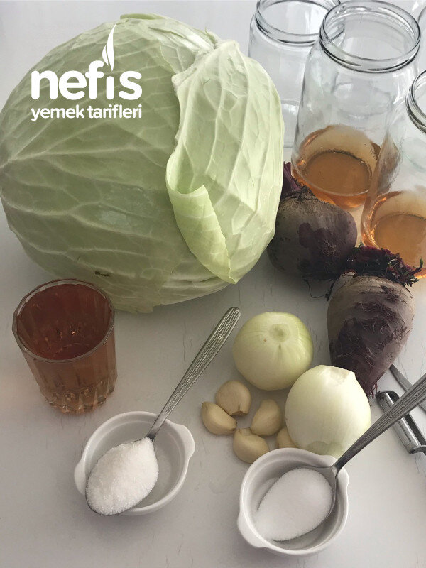

🍽️ 12-14 kişilik⏱️ Hazırlık: 45 dk🏷️ Diğer Tarifler🏷️ Turşu Tarifleri
Malzemeler
- Orta boy turşuluk beyaz lahana
- 2-3 adet pancar
- 1 lt ilk veya 750 ml lik kavanozlar
- İstenirse karabiber
- 1 yemek kaşığı tuz
- 1 yemek kaşığı şeker
- Her kavanozun dibine 1- 1, 5 parmak kadar sirke
- Her kavanoza birer diş sarımsak
- 1-2 adet soğan
Hazırlanışı
- Lahana kesilir, doğranır, pancarlar soyulur, dilimlenir, sarımsaklar soyulur.
- Soğanlar da hazırlanır, dörde veya sekize bölünür.
- Kavanozlara 1-1, 5 parmak sirke konur.
- Bir kaşık tuz, bir kaşık şeker, 8-9 tane karabiber, soğan ve sarımsak ilave edilir.
- Sonra sırayla: 2-3 dilim pancar, lahana, ortaya gelince 2-3 dilim pancar, lahana, en üste pancar ve çeşme suyu ilave edilir.
- 10- 15 dakika bekleyip gerekirse su ilave edilip kapaklar kapatılır.
- Ters çevrilir. Akma ihtimaline karşı bir tepsiye konabilir ,ertesi gün düz çevrilir.
- 15 gün sonra turşu hazır, üzerine tarih yazılabilir.
- Bu tarifle salatalık turşusu da yapılabilir.
- Bu malzemelerle 1 adet 2lt, 4 adet 1 lt ve 3 750 mg lık kavanoz oldu,.